Ticks#
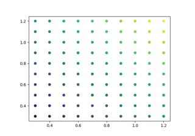
Automatically setting tick positions
Automatically setting tick positions
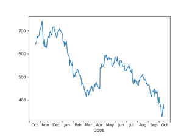
Centering labels between ticks
Centering labels between ticks
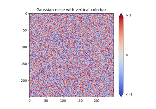
Colorbar Tick Labelling
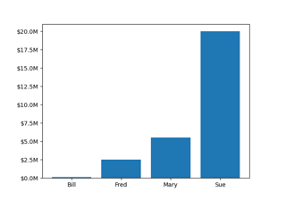
Custom Ticker
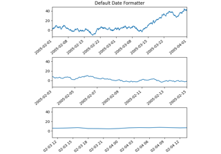
Formatting date ticks using ConciseDateFormatter
Formatting date ticks using ConciseDateFormatter
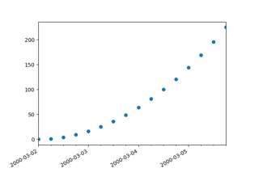
Date Demo Convert
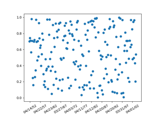
Placing date ticks using recurrence rules
Placing date ticks using recurrence rules
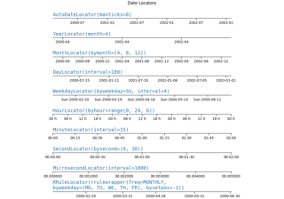
Date tick locators and formatters
Date tick locators and formatters
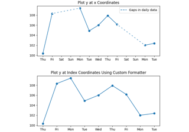
Custom tick formatter for time series
Custom tick formatter for time series
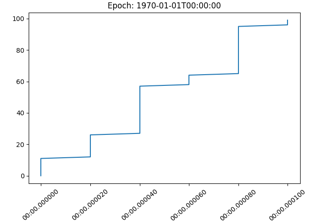
Date Precision and Epochs
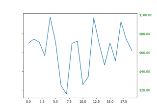
Dollar ticks
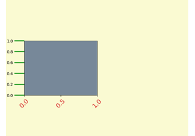
Fig Axes Customize Simple
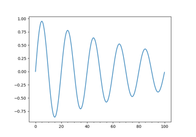
Major and minor ticks
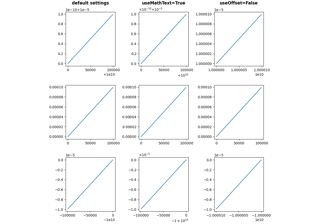
The default tick formatter
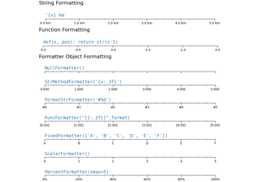
Tick formatters
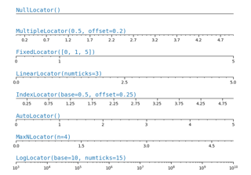
Tick locators

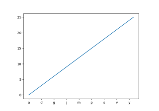
Setting tick labels from a list of values
Setting tick labels from a list of values
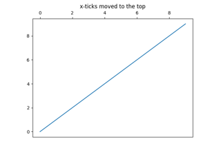
Move x-axis tick labels to the top
Move x-axis tick labels to the top
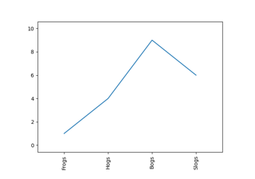
Rotating custom tick labels
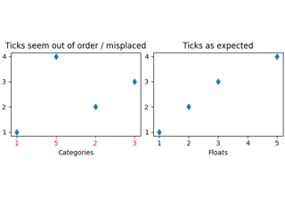
Fixing too many ticks